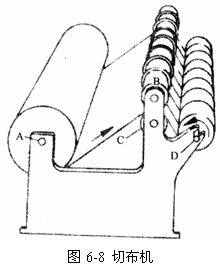
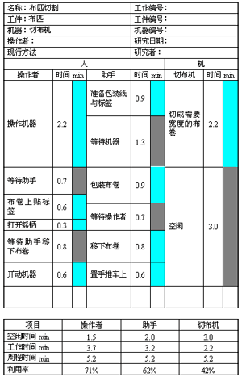
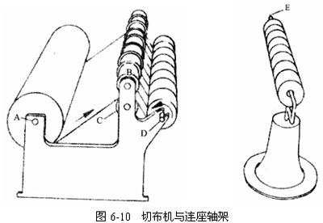
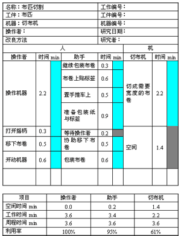
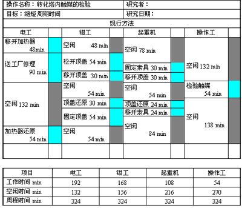
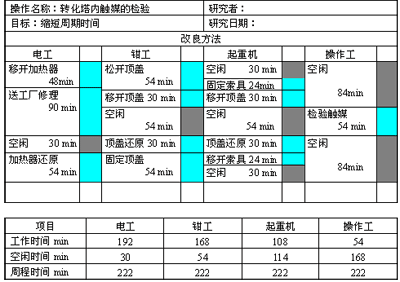

1 . 教学安排
2 . 操作分析的定义与类型
3 . 人机操作分析
4 . 联合操作分析
 联合操作分析的意义与目的
联合操作分析的意义与目的
联合操作分析图的画法
联合操作实例分析
5 . 双手操作分析
6 . 思考与练习题
 返回课程学习首页
返回课程学习首页
联合操作实例分析
例如：将成匹的布切成所需宽度。
图6-8为机器简图，成匹的布置于切布机的后轴A上，当布经过切刀B与转动圆轴C时，即被切成顾客所需的宽度。然后绕于D轴上，切至顾客需要的长度后停机。操作者与其助手将切好的布卷用包装纸包好、贴上标签并注明品级、长度、颜色等。最后，自D轴取下，放入手推车上，整个操作的情况由联合操作分析图记录，如图6-9所示。


图6-9现行方法布匹切割联合操作分析图
由记录的联合操作分析图中可以看出，现行方法机器的空闲时间太多，其利用率仅为42%。操作者利用率为71%，助手则为62%。采用提问技术进行分析，得知其原因在于当切好的布绕在D轴上时，必须等待操作者和助手进行包装后，机器才可再开始工作。
改良方法是增设一连座轴架E，如图6-10所示。当布被切成所需宽度绕于D轴上，达到顾客需要的长度后，将布卷全部滑移至连座的E轴上。这是一个需时很短的简单动作，当布卷移于E轴后，操作者即可开动机器，而此时助手可在E轴上完成包装、贴标签、注明品级、长度、颜色等，并放入手推车。
改良后的布匹切割联合操作分析图如图6-11所示。


图6-11 改良方法布匹切割联合操作分析图
现行方法周期时间为5.2min，即1小时切布11.5周期。而改良后，周期时间为3.6min，即1小时切布达16.6周期，每小时增加切布5.1周期，亦即表示增加切布能力达44%。同时机器的利用率也增加至61%。
例如：转化塔内触媒的检验。
这是一个化工厂联合作业的实例。转化塔为很高的圆形设备，其作用是将一种气体转化为另一种气体。触媒即催化剂，其作用是促使化学反应加速进行。塔的内部分成许多格，放置触媒，原气体经加热器使温度升高后，自塔下部进入塔内。当气体逐渐上升时，与触媒起作用，转化成另一种气体，自塔的上部放出，此时放出的气体仍混有少量原气体，故仍需将原气体分离出来，再送塔内转化。
触媒在使用期间，必须经常检验，以维持其转化效率。检验时，塔的顶盖必须打开，前后的开关必须关闭。由于化工厂多为连续生产，故检验触媒的时间应尽量少，以缩短其周期。
现行方法中用不同工种的4名工人，其工作时间如图6-12所示。图中可见，全部检验操作共需324min，其空闲时间为：电工132min，钳工156min，起重工216min，操作工270min。

图6-12 现行方法转化塔触媒检验联合操作分析图
通过提问技术进行提问，为什么要有如此多的空闲?有无办法使这些空闲减少？为什么必须待电工移开加热器后，钳工才能松开顶盖？为什么必须经钳工固定顶盖后，电工才可开始将加热器还原？
根据联合作用分析的基本原则，如能改为同时操作，则可缩短周程。改进方法就是根据这一原则来建立的，即当加热器移开的时候，顶盖同时松开，而在顶盖还原装妥之时，加热器亦同时还原，改进后的联合操作分析图如图6-13所示。

图6-13改良方法转化塔触媒检验联合操作分析图
由改良方法知，电工、操作工、起重工、钳工的空闲时间大为减少，整个周程时间也由324min降为222min，减少了102min，增加效率达45%。